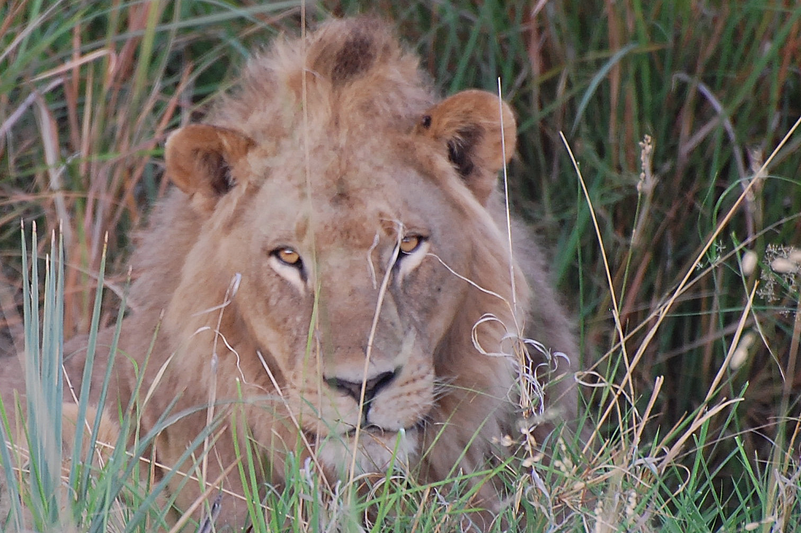
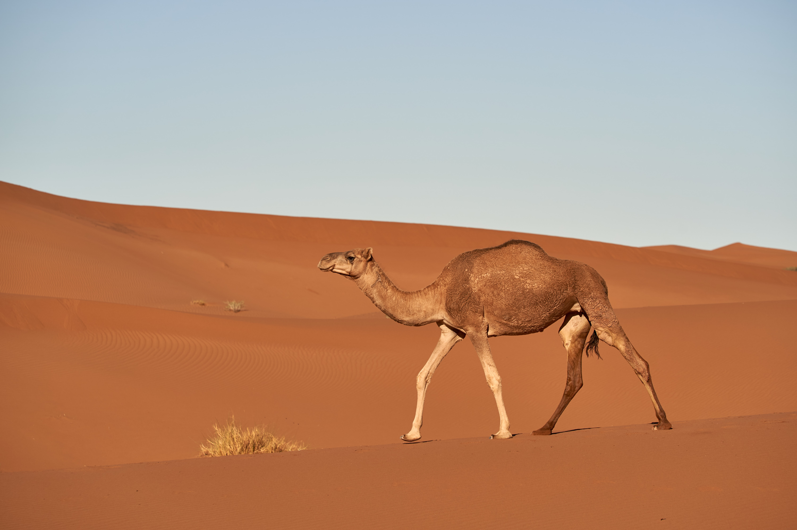

Savanna
Savanna Elephant

largest land mammal in the world.They weigh up to 10,000 pounds and grow to 12 feet tall. They have a long trunk that is very flexible and has nostrils on the end. It is used to pick up food and water and carry it to it's mouth. On the sides of its mouth there are two long teeth that extend out from inside its mouth. These are called tusks, and are made of ivory. They have thick, gray skin on their bodies that protects them from deadly predator bites. They are herbivores, and feed on grasses, fruits, tree leaves, bark, shrubs, and vines. There are usually 10-15 related elephants in a group. Related family members stay in close range of each other. The leader is always a female.
Lion
Lion as a predator in savanna weighing in at 265-420 pounds and up to 10 feet long.Males has manes which female don't have. Manes are a ruff of long hair around the neck which is brown in the front and black in the back.Lions are the only cats that live in groups called prides. Each pride is like a community of 4 to 40 individuals. They all help hunt in order to keep every member healthy, and every cub fed. The pride is made up of one dominant male and maybe a few other males, and related females and their cubs. The males protect the pride and the females hunt and take care of the cubs.
Giraffe

Giraffes are the tallest land animals.A giraffe's 6-foot (1.8-meter) neck weighs about 600 pounds (272 kilograms). The legs of a giraffe are also 6 feet (1.8 meters) long. Giraffes can run very fast—around 35 miles (56 kilometers) per hour for short distances.Giraffes only need 5 to 30 minutes of sleep in a 24-hour period. Giraffes are ruminants and have a stomach with four compartments that digests the leaves they eat.
Rainforest
Orangutan
The name orangutan means "man of the forest" in the Malay language.Known for their distinctive red fur, orangutans are the largest arboreal mammal, spending most of their time in trees. Long, powerful arms and grasping hands and feet allow them to move through the branches. These great apes share 96.4% of our genes and are highly intelligent creatures.
Bengal Tiger
Bengals are large cats with a beautiful dark orange color and black stripes. They have white fur around their eyes and around their collars which extends to their underbellies. They also have large paws, a long curled tail, and are a little more slender in appearance than some of their tiger cousins.Bengal tigers can be found in southeast Asia in parts of India, China, Bangladesh and Indonesia as well as other southeast Asian countries.
Desert
Fennec Fox
The fennec fox is the smallest foxes, but it have large ears measuring to 6 inches radiate body heat and help keep the foxes cool. Fennec foxes live in underground dens.Fennec foxes are opportunistic eaters. They forage for plants but also eat rodents, eggs, reptiles, and insects. It has the ability to go for long periods without water like other animal in desert.
Camel
There are two types of camels: dromedary camels, which have one hump, and Bactrian camels, which have two humps. Camels' humps consist of stored fat, which they can metabolize when food and water is scarce.They have a third, clear eyelid that protects their eyes from blowing sand. Two rows of long lashes also protect their eyes.They can shut their nostrils during sand storms.